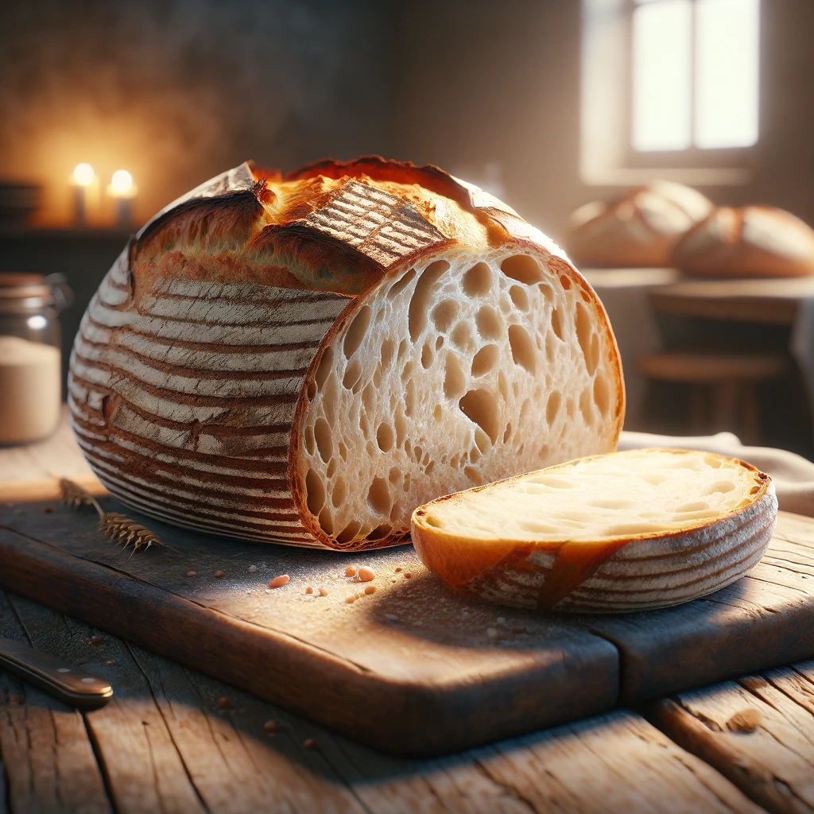
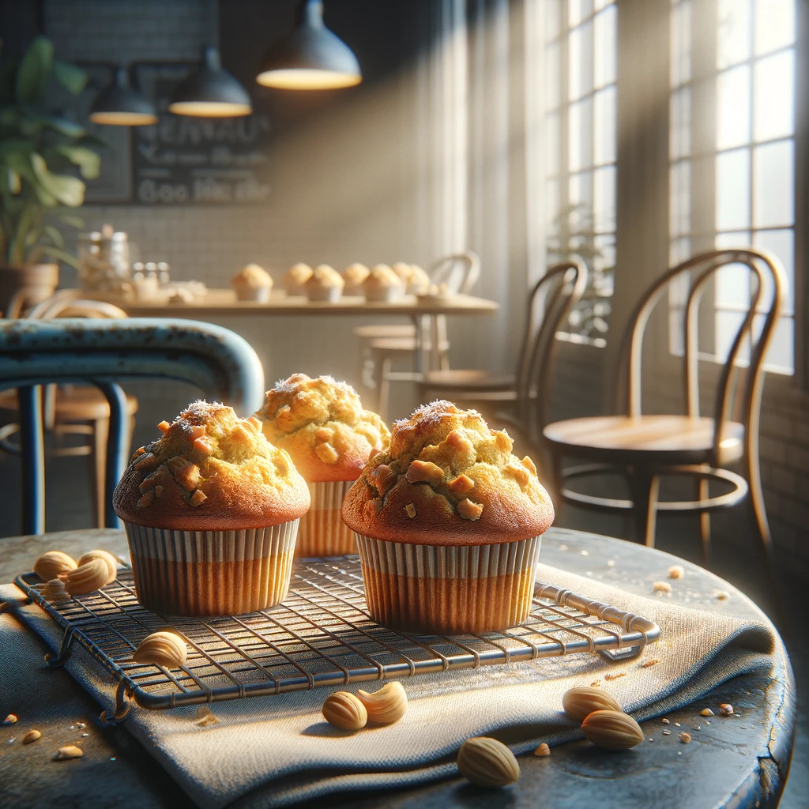
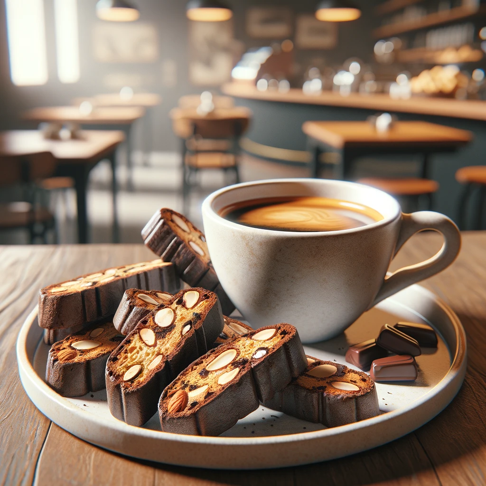
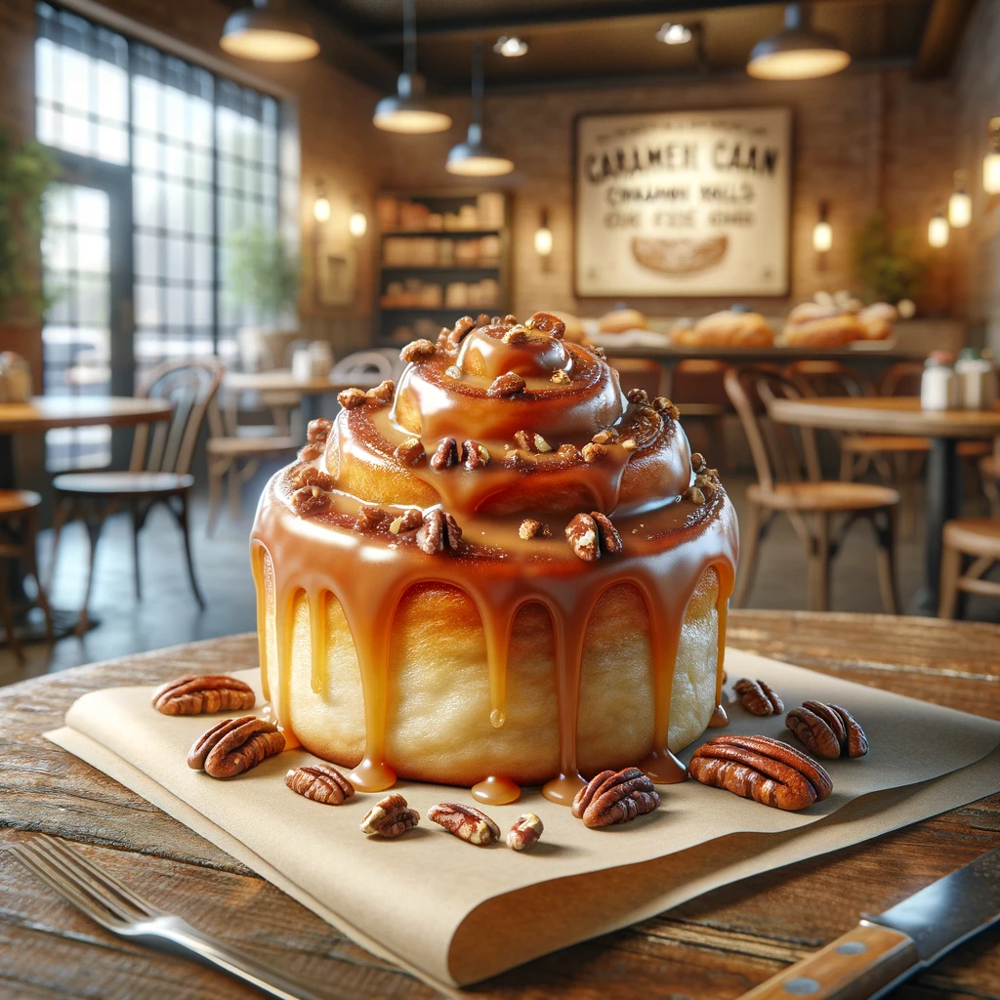

Classic French Croissant.
Our Classic French Croissants are a testament to the art of baking. Made with high-quality butter and a
painstakingly perfected fermentation process, these croissants boast a golden, flaky exterior and a
soft, buttery interior that melts in your mouth.
Artisan Sourdough Bread.
Crafted using traditional methods, our Artisan Sourdough Bread features a beautifully crusty exterior
and a tangy, chewy interior. Fermented over 24 hours, this bread is not only delicious but also easier
to digest.


Chocolate Ganache Tart.
A rich and decadent dessert, our Chocolate Ganache Tart is made with silky smooth ganache housed in a
crisp, buttery pastry shell. It's a luxurious treat for any chocolate lover.
Vegan Banana Nut Muffins.
These moist and flavorful Vegan Banana Nut Muffins are made with ripe bananas and loaded with crunchy
walnuts. They're the perfect guilt-free snack or breakfast option.


Gluten-Free Lemon Drizzle Cake.
Our Gluten-Free Lemon Drizzle Cake is light, zesty, and irresistibly moist, topped with a tangy lemon
glaze that perfectly balances the sweetness of the cake.
Pumpkin Spice Latte Cupcakes.
Embrace the flavors of fall with our Pumpkin Spice Latte Cupcakes. Each cupcake is infused with real
pumpkin and a blend of warm spices, topped with a creamy espresso frosting.
Blueberry Scones.
Bursting with fresh blueberries, our Blueberry Scones are the perfect balance of sweet and tangy. Baked
to perfection, they have a tender, flaky texture that pairs wonderfully with your morning tea or coffee.
Almond Chocolate Biscotti.
Crisp and loaded with roasted almonds and chunks of dark chocolate, our Almond Chocolate Biscotti are a
delightful accompaniment to your coffee or tea, offering a satisfying crunch with every bite.

Raspberry Cream Cheese Danish.
Our Raspberry Cream Cheese Danish features a buttery, flaky pastry filled with creamy cheese and tart
raspberry preserves. It’s a harmonious blend of sweet and tangy flavors that will start your day on a
high note.
Caramel Pecan Cinnamon Rolls.
Dive into the gooey goodness of our Caramel Pecan Cinnamon Rolls. Each roll is loaded with cinnamon
sugar, topped with crunchy pecans, and generously drizzled with homemade caramel sauce.
